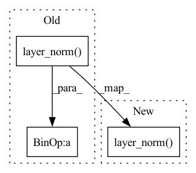

Pattern ID :32448

Before Change
def get_weight(self):
if self.use_layernorm:
weight = self.scale * F.layer_norm(self.weight, self.weight.shape[1:], eps=self.eps)
else:
std, mean = torch.std_mean(self.weight, dim=[1, 2, 3], keepdim=True, unbiased=False)
weight = self.scale * (self.weight - mean) / (std + self.eps)
return self.gain * weight
After Change
def get_weight(self):
if self.use_layernorm:
// NOTE F.layer_norm is being used to compute (self.weight - mean) / (sqrt(var) + self.eps) in one op
weight = F.layer_norm(self.weight, self.weight.shape[1:], eps=self.eps)
else:
std, mean = torch.std_mean(self.weight, dim=[1, 2, 3], keepdim=True, unbiased=False)
weight = (self.weight - mean) / (std + self.eps)
return weight.mul_(self.gain * self.scale)
In pattern: SUPERPATTERN
Frequency: 3
Non-data size: 3
Instances
Fragment ID: 94611287
Project Name: feng-lab/pytorch-image-models
Commit Name: 8e4ac3549f65eefa6b094cd04876b19ed3ca7506
Time: 2021-06-07
Author: rwightman@gmail.com
File Name: timm/models/layers/std_conv.py
M Class Name: ScaledStdConv2d
N Class Name: ScaledStdConv2d
M Method Name: get_weight(1)
N Method Name: get_weight(1)
M Parent Class: nn.Conv2d
N Parent Class: nn.Conv2d
M File Name: timm/models/layers/std_conv.py
N File Name: timm/models/layers/std_conv.py
M Start Line: 92
M End Line: 96
N Start Line: 103
N End Line: 107
'>
Before Change
def forward(self, inp):
if self.pre_lnorm:
inp = self.layer_norm(inp)
// positionwise feed-forward
if self.relu_squared:
core_out = self.CoreNet2(self.CoreNet1(inp) ** 2)
else:
core_out = self.CoreNet2(self.CoreNet1(inp))
After Change
def forward(self, inp):
if self.pre_lnorm:
// layer normalization + positionwise feed-forward
core_out = self.CoreNet(self.layer_norm(inp))
// residual connection
output = core_out + inp
'>
Fragment ID: 94611289
Project Name: microsoft/archai
Commit Name: a0bfd9c3239c420fdf785469f249f4d2c4ccc51a
Time: 2022-12-16
Author: caioctmendes@gmail.com
File Name: archai/nlp/nvidia_transformer_xl/mem_transformer.py
M Class Name: PositionwiseFF
N Class Name: PositionwiseFF
M Method Name: forward(2)
N Method Name: forward(2)
M Parent Class: nn.Module
N Parent Class: nn.Module
M File Name: archai/nlp/nvidia_transformer_xl/mem_transformer.py
N File Name: archai/nlp/nvidia_transformer_xl/mem_transformer.py
M Start Line: 96
M End Line: 110
N Start Line: 71
N End Line: 80
'>
Before Change
def get_weight(self):
if self.use_layernorm:
weight = self.scale * F.layer_norm(self.weight, self.weight.shape[1:], eps=self.eps)
else:
std, mean = torch.std_mean(self.weight, dim=[1, 2, 3], keepdim=True, unbiased=False)
weight = self.scale * (self.weight - mean) / (std + self.eps)
return self.gain * weight
After Change
def get_weight(self):
if self.use_layernorm:
// NOTE F.layer_norm is being used to compute (self.weight - mean) / (sqrt(var) + self.eps) in one op
weight = F.layer_norm(self.weight, self.weight.shape[1:], eps=self.eps)
else:
std, mean = torch.std_mean(self.weight, dim=[1, 2, 3], keepdim=True, unbiased=False)
weight = (self.weight - mean) / (std + self.eps)
return weight.mul_(self.gain * self.scale)
'>
Fragment ID: 94611288
Project Name: feng-lab/pytorch-image-models
Commit Name: 8e4ac3549f65eefa6b094cd04876b19ed3ca7506
Time: 2021-06-07
Author: rwightman@gmail.com
File Name: timm/models/layers/std_conv.py
M Class Name: ScaledStdConv2dSame
N Class Name: ScaledStdConv2dSame
M Method Name: get_weight(1)
N Method Name: get_weight(1)
M Parent Class: nn.Conv2d
N Parent Class: nn.Conv2d
M File Name: timm/models/layers/std_conv.py
N File Name: timm/models/layers/std_conv.py
M Start Line: 134
M End Line: 138
N Start Line: 138
N End Line: 142